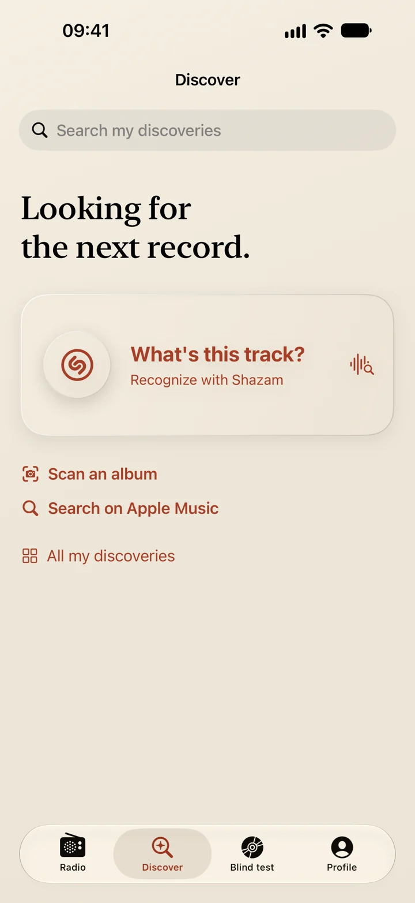
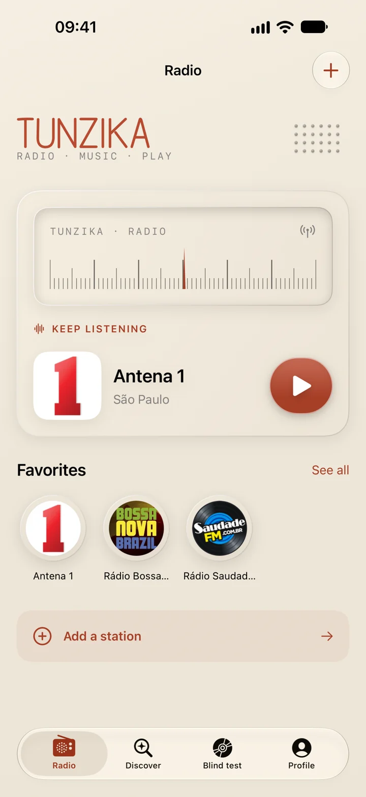
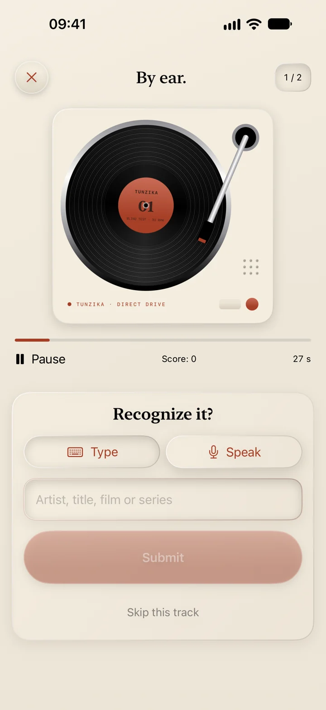
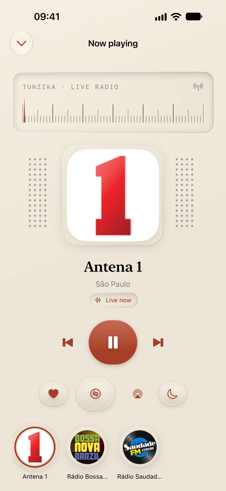
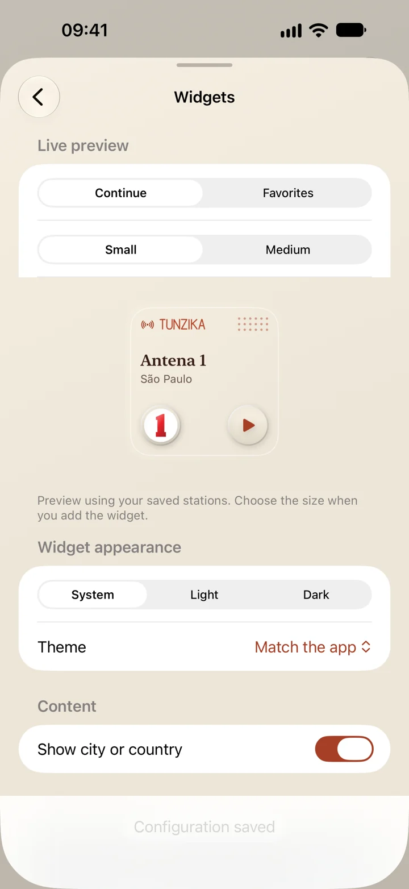
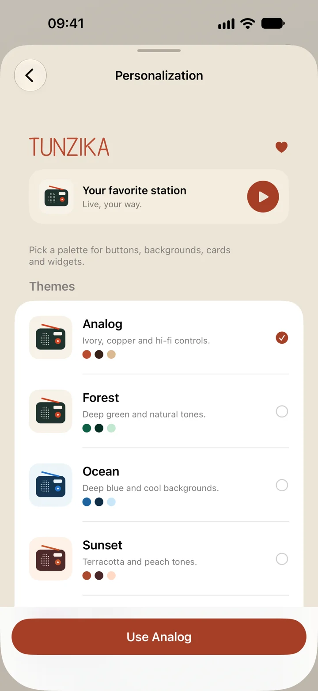
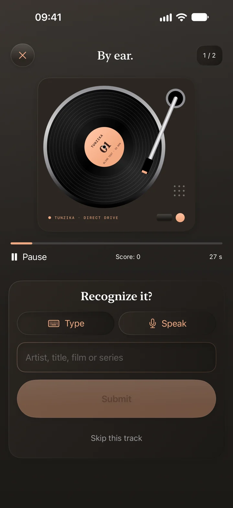

Right where you left off.
Your last station and your favorites, ready when you are.
Your favorite radio. The song you just fell for. A quiz you can’t stop playing. All in one beautifully analog app.

Free radio. No account. Just press play.



Made for the love of music
A familiar station to start your morning. A new song that stays with you. Tunzika brings the joy of radio and the thrill of discovery together.

Tune in
Browse thousands of live stations by country, city, or genre. Keep your favorites close, and let the music follow you through your day.
A closer look
Radio, discoveries, and a turntable with a competitive streak. Take a look around.
Your last station and your favorites, ready when you are.
A radio-inspired dial. Real live stations. No distractions.
Recognize it with Shazam and keep your discoveries together.
Pick a playlist. Name that tune. Put your ears to the test.

Resume your last station straight from your Home Screen.

Themes, icons, and station styles that feel like you.
Swipe or use the controls to explore. Screens show the app with preview stations and music.
Follow your curiosity
Some songs find you before you find them. Recognize music around you with Shazam, search Apple Music, or scan the printed text on an album sleeve.
Keep the discoveries worth coming back to in one place.
Let’s play
Turn your Apple Music playlists into a Blind Test. You get a 30-second excerpt. Name the artist, the song, the film, or the series. Type it, or say it out loud.
Apple Music playback and Blind Test require a compatible Apple Music subscription.

In tune with your day
Widgets bring your last station and favorites a tap closer.
Browse stations, favorites, and recent listens with CarPlay.
Control your radio from Apple Watch, or ask Siri to play.
Your music. Your business.
No Tunzika account. No advertising. No analytics backend. Your listening life belongs to you.
Choose a country, find a station, and listen. That’s all it takes.
Your country, radio favorites, and listening history are stored locally.
Microphone, camera, and music permissions are requested when you use those features.
Start free. Stay for the music.
Listen first. If you want a bigger collection and more ways to make it yours, there’s Tunzika Pro.
Tunzika
Everything you need to find your station.
Tunzika Pro
A bigger world of radio and discovery.
Monthly, yearly, or lifetime. Prices in the app.
Your next favorite is out there
Tunzika for iPhone and iPad. Put a little more music in your day.
Radio requires an internet connection. Streams are provided by independent stations.
Yes. Live radio is free in your chosen country, with background playback and a sleep timer. The free tier includes 5 favorites and 3 song recognitions or album scans combined. Tunzika Pro lifts those limits and unlocks country changes and personalization.
You don’t need Apple Music to listen to radio. Apple Music playback and the Blind Test quiz require authorized access and a compatible Apple Music subscription. Availability depends on your account and region.
Yes. Radio keeps playing in the background, with controls on the Lock Screen and in Control Center. You can also use CarPlay, Siri shortcuts, and Apple Watch radio controls.
Live radio needs an internet connection. Tunzika does not download radio streams or Apple Music tracks for offline listening.
Your selected country, radio favorites, and radio history stay on your device. Tunzika doesn’t run an account or analytics backend. Optional recognition and music features contact Apple services, and stations receive standard network information when you connect.
Tunzika is available in English, French, Brazilian Portuguese, Spanish, German, and Italian on iPhone and iPad.